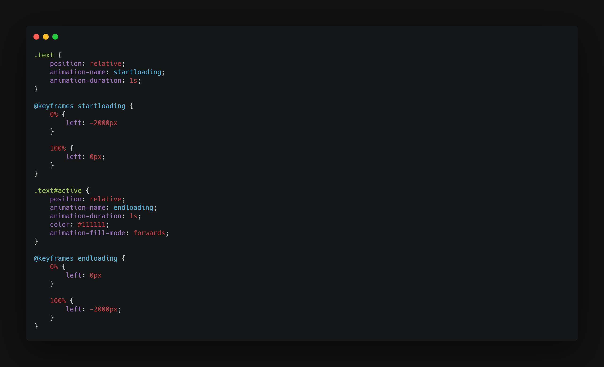
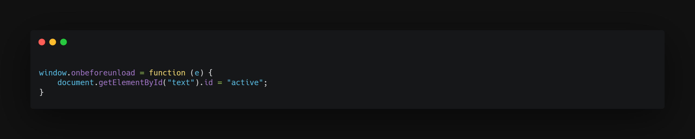
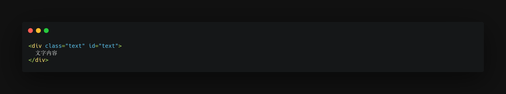

CSS与JS实现页面过渡
2021-07-05 • 技术 - 设计 • HTML JavaScript CSS •#前言
因为自己最近在忙这个博客的建设，所以自己就想给这个blog做一个切换页面时的过渡。可在网上却都没什么符合这blog主题的，于是自己动手丰衣足食，自己就做了现在的这种效果。
#效果
效果如此blog中的切换效果，即：
进入新页面时，除顶栏及底栏外的其余文字部分从屏幕左侧飞入，
离开此页面时，除顶栏及底栏外的其余文字部分从屏幕左侧飞出。
#实现方式
考虑到需要有对进入\离开页面的检测，这里需要用到JavaScript。对样式的调整，我选择了使用CSS动画。
这样还有个优点：因为需要让动画结束后元素停留在结束位置，所以先使用动画，将元素从left:-xxxpx移动到left:0px即可。
而对于离开页面，则需要使用window.onbeforeunload参数检测是否离开页面，然后触发动画。
触发动画的方式，这里采用的是通过JS改变HTML内容的属性id，配合CSS选择器实现。
值得注意的是，因为网络原因可能会导致一个页面的加载时间变长，这时若离开页面的动画播放完毕则会重新回到原位置。
要解决这个问题，最好的办法是在css动画属性中加入"animation-fill-mode: forwards;",让动画结束时元素停在结束位置
#代码
CSS：
Javascript:

HTML

文字版：
CSS：.text { position: relative; animation-name: startloading; animation-duration: 1s; } @keyframes startloading { 0% { left: -2000px } 100% { left: 0px; } } .text#active { position: relative; animation-name: endloading; animation-duration: 1s; color: #111111; animation-fill-mode: forwards; } @keyframes endloading { 0% { left: 0px } 100% { left: -2000px; } }JS：
window.onbeforeunload = function (e) {
document.getElementById("text").id = "active";
}
HTML：
<div class="text title" id="text">
文字内容
</div>
原创内容使用 知识共享 署名-非商业性使用-相同方式共享 4.0 (CC BY-NC-ND 4.0) 协议授权。